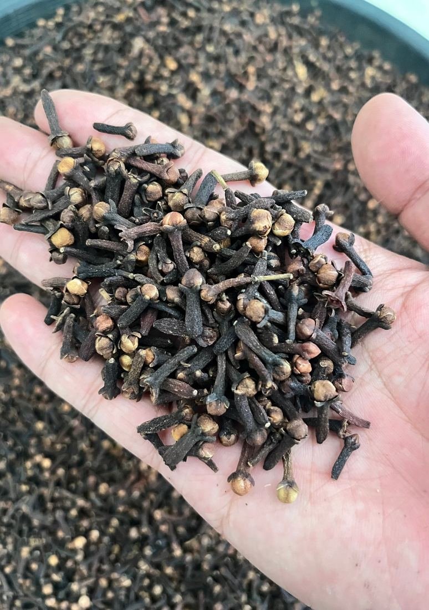

Cengkeh
Jenis: cengkeh kering, cengkeh bubuk.
Spesifikasi: kadar air maksimal 3,5%, kadar minyak atsiri tinggi, aroma kuat.
Kemasan: karung 25 kg / 50 kg atau sesuai permintaan.
Penggunaan: industri rokok kretek, bumbu masakan, obat-obatan, aromaterapi, dan kosmetik.